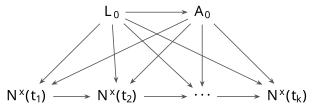
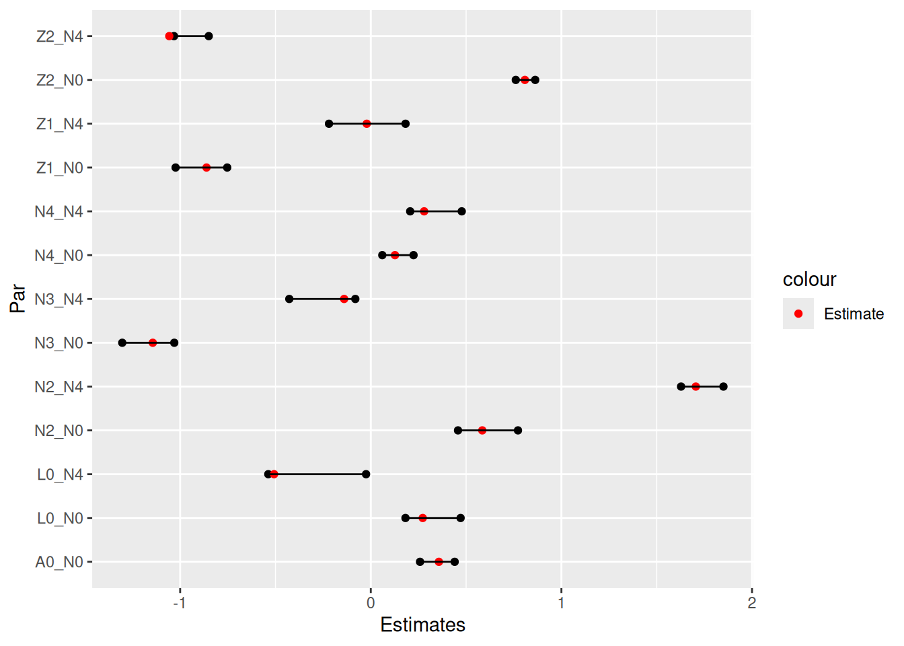
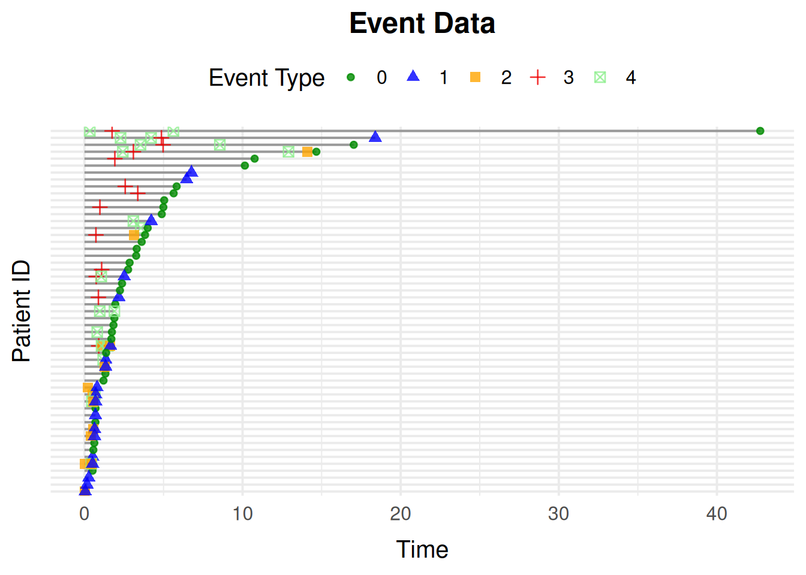
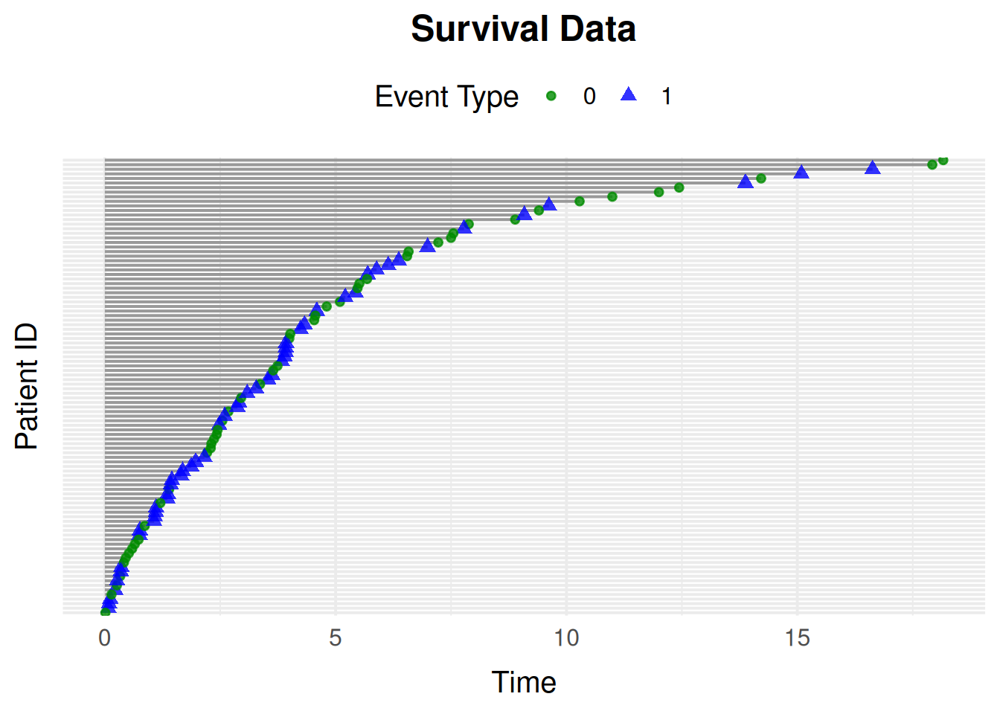
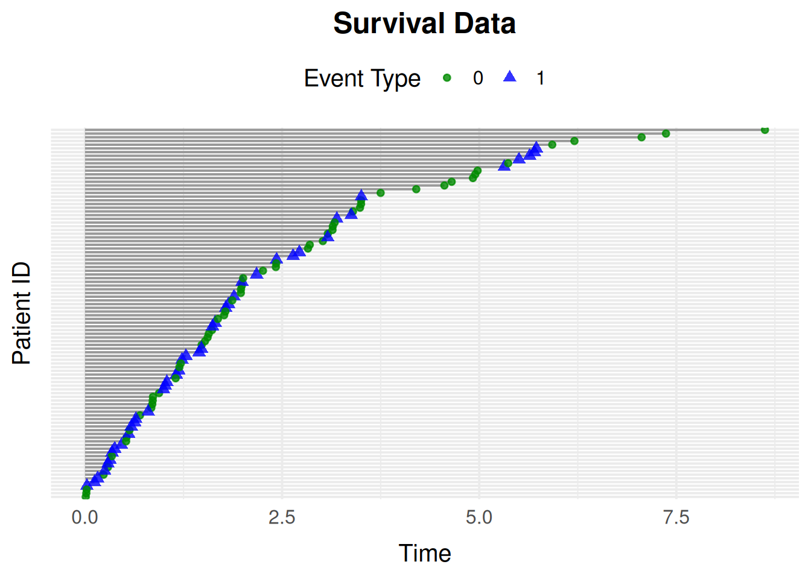
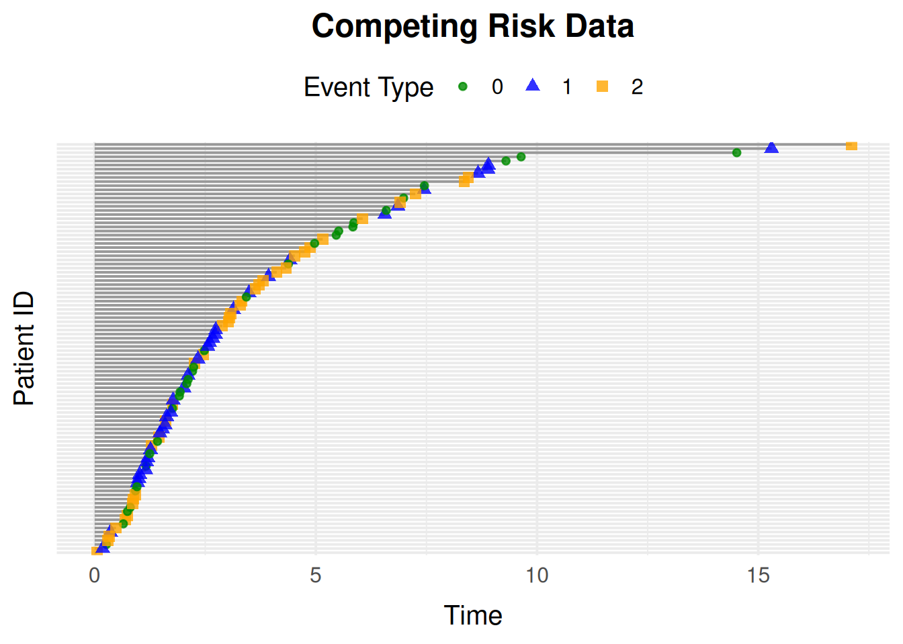
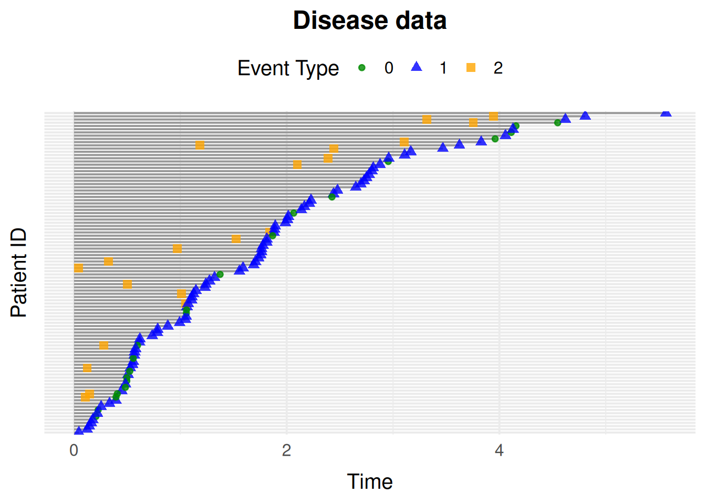
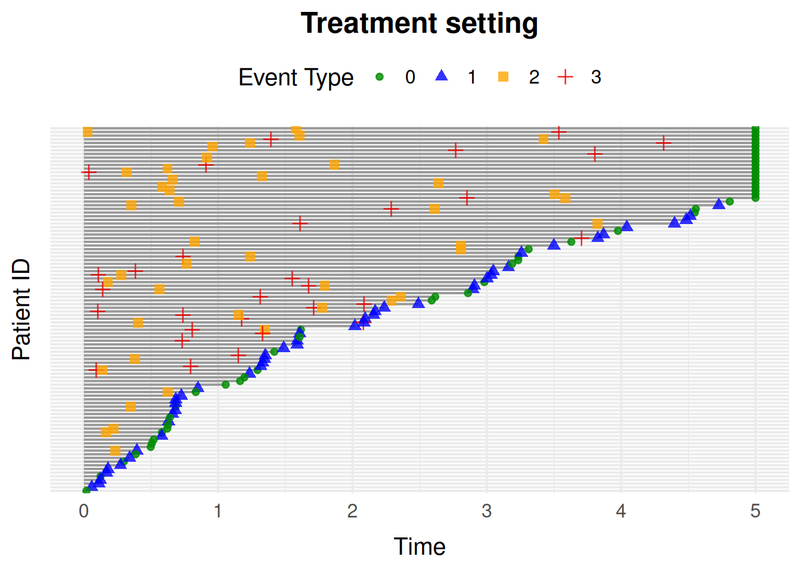
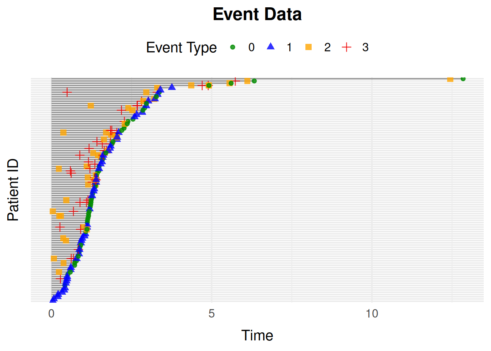
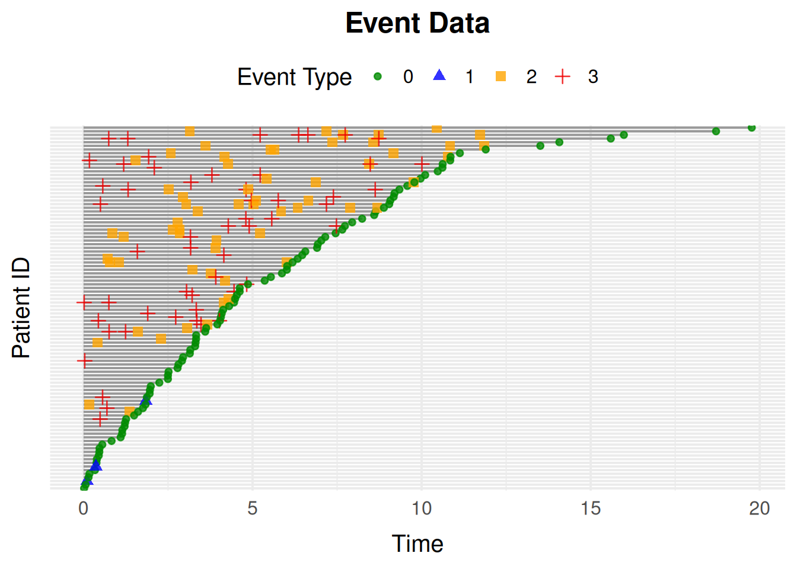

Introduction
At the core of the package is the general-purpose function simEventData(). Built on top of it are wrapper functions for common settings (survival data, competing risks, disease progression), functions for simulating new data from models fitted to observed data, and functions for performing and evaluating interventions.
The next section explains the general simulation setting and procedure from a mathematical point of view. The remaining sections walk through the package’s functions and how to use them.
The General Simulation Setting
The simulation approach is similar to Eimermacher et al., 2015, and is based on a counting process framework.
The Mathematics
We consider a scenario where n individuals are followed over a time interval \mathcal{T} = [0, \rho), where \rho \in (0,\infty]. Each individual can experience J \geq 1 types of events, indexed by \mathcal{X} = \lbrace 0, 1, \ldots , J \rbrace, with x = 0 denoting censoring. Event types need not be mutually exclusive, and one event type is allowed to affect the risk of another. For instance, in simDisease(), developing the disease changes the hazard of death. For each event type x \in \mathcal{X}, let N^x denote the associated counting process, so that N^x(t) counts how many times event x has occurred by time t; we collect these into the J + 1 dimensional vector N. Because the risk of an event can depend on the full event history so far, we track the filtration (\mathcal{F}_t)_{t \in \mathcal{T}}, the information available up to and including time t, and \mathcal{F}_{t-}, the information available strictly before t.
We assume the intensity of each counting process takes the form \lambda^x(t\, \vert \, \mathcal{F}_{t-}) = R^x(t\, \vert \, \mathcal{F}_{t-}) \, \eta^x \nu^x t^{\nu^x-1} \, \phi^x(t \, \vert \, \mathcal{F}_{t-}), which combines three components: a Weibull baseline hazard \eta^x \nu^x t^{\nu^x-1} with scale \eta^x > 0 and shape \nu^x > 0 (intensity increasing over time if \nu^x > 1, decreasing if \nu^x < 1); an at-risk indicator R^x(t \, \vert \, \mathcal{F}_{t-}) \in \{0, 1\} that switches event x off once an individual is no longer eligible for it (e.g. after a terminal event, or once a recurrent event has reached its maximum count); and a multiplicative term \phi^x(t \, \vert \, \mathcal{F}_{t-}) that captures the effects of baseline covariates and past events.
We specify these effects through a log-linear model \phi^x(t \, \vert \, \mathcal{F}_{t-}) = \exp \left( L^{\top}\beta_1 + N(t-)^{\top} \beta_2 \right), where L \in \mathbb{R}^d contains the baseline covariates, \beta_1 \in \mathbb{R}^d their effects on event x, and \beta_2 \in \mathbb{R}^{J+1} the effects of the event counts immediately before time t on event x. Thus, the model allows both baseline characteristics and the event history to modify the intensity while retaining the multiplicative structure of the proportional-intensity model. For example, a prior disease event can increase or decrease the hazard of death.
Simulation proceeds by repeatedly drawing the waiting time until the next event, conditional on the individual’s current event history. Given the intensity above, the cumulative hazard determines the distribution of this waiting time. simevent samples from that distribution by inverting the cumulative hazard in closed form when possible, and using numerical methods otherwise, rather than discretizing time.
The simEventData() Function
simEventData() is the general-purpose function implementing the simulation scheme above.
Every simulated dataset includes two built-in baseline variables, L0 and A0. L0 is a baseline covariate, and A0 is a baseline treatment indicator whose generator can depend on L0; their distributions can be changed via gen_L0/gen_A0. This setup corresponds to the following DAG:

simEventData().
Note the time-varying feedback in the model: event counts N(t-) (of the same or other event types) can affect the intensity of future events, e.g. a prior disease event increasing the hazard of death in simDisease().
You can add baseline covariates beyond the built-in L0 and A0 by supplying generator functions:
The beta argument specifies the coefficients of the log-linear intensity model. It is a matrix with one column per event process and one row per predictor. Rows correspond first to baseline covariates (L0, A0, and any covariates supplied via add_cov), followed by the event counts (N0, N1, …). Thus, beta[i, j] gives the effect of predictor i on the intensity of event process j.
For example, with the two built-in covariates, two additional covariates, and five event processes above, beta should have 9 rows and 5 columns:
Let’s make the setup a bit more complicated by specifying an at_risk() function, which defines the risk windows for recurrent events, based on how many times each event has already occurred:
at_risk <- function(events) {
return(c(
1,
1, # Always at risk for event 0 and 1
as.numeric(events[3] < 2), # Event 2 can occur twice
as.numeric(events[4] < 1), # Event 3 can occur once
as.numeric(events[5] < 2) # Event 4 can occur twice
))
}Additionally, we also add an at_risk_cov() function, which specifies the risk windows as a function of the baseline covariates.
at_risk_cov <- function(covariates) {
return(c(
1,
1, # The covariates do not change the risk of event 0 and 1
as.numeric(covariates[1] < 0.5), # Only at risk of event 2 if L0 < 0.5
as.numeric(covariates[2] == 1), # Only at risk of event 3 if A0 = 1
1 # The covariates do not change the risk of event 4
))
}So to be at risk, both indicators from at_risk() and at_risk_cov() must be true.
Let’s simulate data for 5000 individuals now:
set.seed(973)
data <- simEventData(
N = 5000,
beta = beta,
add_cov = add_cov,
at_risk = at_risk,
at_risk_cov = at_risk_cov
)
head(data)
#> Key: <ID>
#> ID Time Delta L0 A0 Z1 Z2 N0 N1 N2
#> <int> <num> <int> <num> <num> <num> <num> <num> <num> <num>
#> 1: 1 2.426639 4 0.0482511 1 0 0.9036369 0 0 0
#> 2: 1 3.094270 3 0.0482511 1 0 0.9036369 0 0 0
#> 3: 1 12.906626 4 0.0482511 1 0 0.9036369 0 0 0
#> 4: 1 14.082609 2 0.0482511 1 0 0.9036369 0 0 1
#> 5: 1 14.666997 0 0.0482511 1 0 0.9036369 1 0 1
#> 6: 2 1.834758 0 0.2186699 0 0 1.0631460 1 0 0
#> N3 N4
#> <num> <num>
#> 1: 0 1
#> 2: 1 1
#> 3: 1 2
#> 4: 1 2
#> 5: 1 2
#> 6: 0 0Formatting Data for Cox Regression
Transform the data into tstart-tstop format with IntFormatData() (specify which columns hold the counting-process data), then fit Cox models with the survival package:
library(survival)
library(data.table)
#>
#> Attaching package: 'data.table'
#> The following object is masked from 'package:base':
#>
#> %notin%
library(ggplot2)
data_int <- IntFormatData(data, N_cols = 8:12)
# Process 0
survfit0 <- coxph(
Surv(tstart, tstop, Delta == 0) ~ L0 + A0 + Z1 + Z2 + N2 + N3 + N4,
data = data_int
)
# Process 4
survfit4 <- coxph(
Surv(tstart, tstop, Delta == 4) ~ L0 + Z1 + Z2 + N2 + N3 + N4,
data = data_int[(N4 < 2) & (A0 == 1)]
)Visualize the estimated coefficients alongside the true values used to simulate the data:
CIs <- cbind(
"Par" = c(
paste0(rownames(confint(survfit0)), "_N0"),
paste0(rownames(confint(survfit4)), "_N4")
),
rbind(confint(survfit0), confint(survfit4))
)
rownames(CIs) <- NULL
colnames(CIs) <- c("Par", "Lower", "Upper")
CIs <- data.table(CIs)
CIs[, True_val := c(beta[-c(5, 6), 1], beta[-c(2, 5, 6), 5])]
CIs$Lower <- as.numeric(CIs$Lower)
CIs$Upper <- as.numeric(CIs$Upper)
ggplot(data = CIs) +
geom_point(aes(y = Par, x = Lower)) +
geom_point(aes(y = Par, x = Upper)) +
geom_point(aes(y = Par, x = True_val, col = "Estimate")) +
scale_color_manual(values = c("Estimate" = "red")) +
geom_segment(aes(y = Par, yend = Par, x = Lower, xend = Upper)) +
xlab("Estimates")
Visualizing Event Histories
plotEventData() plots individual event histories over time, e.g. for the first 100 individuals:
plotEventData(data[1:100, ])
Overriding Entries of the Beta Matrix
The override_beta argument lets you set specific effects without rebuilding the whole beta matrix. For example, zero out the effect of L0 on processes N0 and N1:
data <- simEventData(
N = 1000,
beta = beta,
add_cov = add_cov,
at_risk = at_risk,
override_beta = list("L0" = c("N0" = 0, "N1" = 0))
)You can also specify non-linear effects, e.g. increase the effect of N2 on N1 by 2 once N2 > 1:
data <- simEventData(
N = 1000,
beta = beta,
add_cov = add_cov,
at_risk = at_risk,
override_beta = list("N2 > 1" = c("N1" = 2))
)Interaction effects are specified similarly, e.g. an interaction effect of 1 between L0 and N3 on N1:
data <- simEventData(
N = 3 * 10^4,
beta = beta,
add_cov = add_cov,
at_risk = at_risk,
override_beta = list("L0 * N3" = c("N1" = 1))
)And effects that depend on time, e.g. an additional effect of 0.4 on N2 once T1 > 1:
data <- simEventData(
N = 10000,
beta = beta,
add_cov = add_cov,
at_risk = at_risk,
override_beta = list("T1 > 1" = c("N2" = 1))
)Wrapper Functions for Common Settings
simEventData() is fully general, but for common settings the package provides ready-made wrappers built on top of it. sim_graph() is a general-purpose alternative to writing another such wrapper: see vignette("sim-event-graph") for how each of the wrappers below can be reproduced as a sim_graph() specification.
Survival Data with simSurvData()
simSurvData() simulates survival data for individuals at risk of both censoring (0) and an event (1). By default there are no covariate effects:
data <- simSurvData(100)
plotEventData(data, title = "Survival Data")
You can specify how the baseline covariates L0 and A0 affect the censoring and event hazards through the beta matrix, and set the Weibull shape (\eta) and scale (\nu) parameters:
# Effects of L0 and A0 on the censoring hazard (1st column) and death hazard (2nd column)
beta <- cbind("Censoring" = c(0, 0), "Death" = c(1, -1))
eta <- c(0.2, 0.2)
nu <- c(1.05, 1.05)
data <- simSurvData(100, beta = beta, eta = eta, nu = nu)
plotEventData(data, title = "Survival Data")
Competing Risk Data with simCRdata()
simCRdata() simulates data from a competing risk setting with two competing causes, using the same kind of parameters as simSurvData():
data <- simCRdata(100)
plotEventData(data, title = "Competing Risk Data")
Health Care Data with simDisease()
simDisease() simulates health care data from a setting where patients can experience three events: Censoring (0), Death (1), and Disease (2). The beta_X_Y arguments control how X affects Y: a positive value means a higher value of X increases the intensity of Y, and a negative value decreases it. See ?simDisease() for the full list of arguments.
data <- simDisease(
N = 100,
cens = 1,
eta = c(0.1, 0.3, 0.1),
nu = c(1.1, 1.3, 1.1),
beta_L0_L = 1,
beta_A0_L = -1.1,
beta_L_D = 1,
beta_L0_D = 0
)
plotEventData(data, title = "Disease data")
Health Care Data with simTreatment and simDropIn
simTreatment() extends the disease setting with a treatment process: it simulates four event types representing censoring (0), death (1), treatment (2), and covariate change (3), again controlled via beta_X_Y arguments:
data <- simTreatment(
N = 100,
beta_L_A = 1,
beta_L_D = 1,
beta_A_D = -1,
beta_A_L = -0.5,
beta_L0_A = 1,
eta = rep(0.1, 4),
nu = rep(1.1, 4),
followup = 5,
cens = 1,
op = 1
)
plotEventData(data, title = "Treatment setting")
simDropIn() is a related wrapper for a setting with 4 or 5 events: censoring, death, drop-in initiation, covariate change, and optionally treatment. It is again configured through beta_X_Y arguments; see ?simDropIn() for details.
Time-Varying Effects with simEventTV()
simEventTV() adapts simEventData() to allow effects that change at a fixed time point: after time t_prime, the matrix tv_eff is added to beta. This flexibility comes at the cost of a slightly slower simulation procedure, so use simEventData() instead when effects are constant over time.
set.seed(6258)
eta <- rep(0.1, 4)
term_deltas <- c(0, 1)
tv_eff <- matrix(0.5, ncol = 4, nrow = 6)
beta <- matrix(nrow = 6, ncol = 4, 0.5)
t_prime <- 1
data <- simEventTV(
N = 100,
t_prime = t_prime,
tv_eff = tv_eff,
eta = eta,
term_deltas = term_deltas,
beta = beta,
lower = 10^(-15),
upper = 10^2,
max_events = 30
)
plotEventData(data)
Intensities Depending on Time Since Last Event with simEventDataTdPhi()
Sometimes the intensity of an event should depend not just on covariates and event counts, but on the time elapsed since the most recent occurrence of that event. Assume the event-specific intensity has the form
\lambda^x(t \mid \mathcal F_t)
= R^x(t \mid \mathcal F_t) \,\eta^x \nu^x t^{\nu^x-1} \,\phi^x(t \mid \mathcal F_t),
where
\phi^x(t \mid \mathcal F_t)
= \exp\left( L^\top \beta_1 + (T^* - t)\beta_2 \right),
and T^* denotes the most recent event time. Simulation from this setting is done using simEventDataTdPhi(), which takes the additional argument beta2 controlling the exponential decay/growth in \phi^x:
beta <- matrix(rnorm(4 * 6, 0, 0.1), ncol = 4)
data <- simEventDataTdPhi(
N = 100,
beta2 = c(0.01, 2, 0, 0.1),
beta = beta,
upper = 10^20,
max_iter = 10^3
)
plotEventData(data)
Simulating New Data from a Fitted Model
Besides simulating from user-specified parameters, simevent can simulate new data from a model already fitted to observed data. simEventCox() does this for Cox proportional hazards models, and simEventObj() for any model equipped with a predict2 method.
Say we have some observed data:
Using simEventCox()
Fit Cox models for the events of interest, then pass the fitted models to simEventCox():
cox1 <- coxph(Surv(Time, Delta == 1) ~ L0 + A0, data = data)
cox2 <- coxph(Surv(Time, Delta == 2) ~ L0 + A0, data = data)
cox_fits <- list("Process 1" = cox1, "Process 2" = cox2)
old_vars <- data[, c(4, 5)]
new_data <- simEventCox(100, cox_fits, old_vars = old_vars)
head(new_data)
#> Key: <ID>
#> ID Time Delta L0 A0 Process 1 Process 2
#> <int> <num> <num> <num> <num> <num> <num>
#> 1: 1 0.4931728 1 0.5363954 0 0 1
#> 2: 1 4.0046486 0 0.5363954 0 1 1
#> 3: 2 0.6828662 1 0.3144497 0 0 1
#> 4: 2 9.8772172 0 0.3144497 0 1 1
#> 5: 3 0.8909987 1 0.9335247 1 0 1
#> 6: 3 4.2916262 0 0.9335247 1 1 1New baseline covariates are simulated by resampling rows of old_vars.
Using simEventObj()
simEventObj() works with any fitted model, as long as you equip it with a predict2() method returning the times and cumulative hazard for new covariate values. For example, with a Cox model:
cox_fit <- coxph(Surv(Time, Delta == 1) ~ L0 + A0, data = data)
predict2 <- function(obj, ...) UseMethod("predict2")
predict2.coxph <- function(obj, sim_data, ...) {
preds <- survfit(obj, newdata = sim_data)
# preds$cumhaz is a times x individuals matrix; reshape to individuals x times x events
chf <- array(t(preds$cumhaz), dim = c(nrow(sim_data), length(preds$time), 1))
list(time = preds$time, chf = chf)
}
old_vars <- data[, c("L0", "A0")]
new_data <- simEventObj(100, cox_fit, old_vars = old_vars)
head(new_data)
#> Key: <ID>
#> ID Time Delta L0 A0 N0
#> <int> <num> <num> <num> <num> <num>
#> 1: 1 Inf 0 0.926276597 0 0
#> 2: 2 Inf 0 0.730683018 0 0
#> 3: 3 13.181177 1 0.057044588 0 1
#> 4: 4 8.531944 1 0.006538616 1 1
#> 5: 5 1.371236 1 0.921506565 1 1
#> 6: 6 4.866903 1 0.240172203 0 1Interventions
alphaSim() and intEffectAlpha() simulate data under an intervention that multiplies the shape parameter of a chosen process by a factor alpha, in one of the predefined settings ("Disease", "Drop In", "Treatment", or "Statin").
Say we want to intervene in the Drop In setting by scaling the intensity of the drop-in process. Data without intervention is obtained by scaling with the factor 1:
alphaSim(N = 10^3, alpha = 1, tau = 5, setting = "Drop In")
#> $effectDeath
#> [1] 0.1067194
#>
#> $effectSetting
#> [1] 0.6679842By default, alphaSim() returns the proportion of individuals who experience death, and the proportion who experience Drop In, by a specified time \tau, in group A0 = a0. Setting years_lost = TRUE instead returns the number of years lost to death and Drop In before \tau; setting return_data = TRUE returns the simulated data itself.
intEffectAlpha() performs the same kind of intervention and additionally plots a sample of the simulated event data:
intEffectAlpha(
N = 1000,
alpha = 0.7,
tau = 5,
years_lost = TRUE,
a0 = 1,
plot = TRUE,
setting = "Drop In"
)
#> $effect_2
#> [1] 1.57399
#>
#> $effect_death
#> [1] 0.2253148